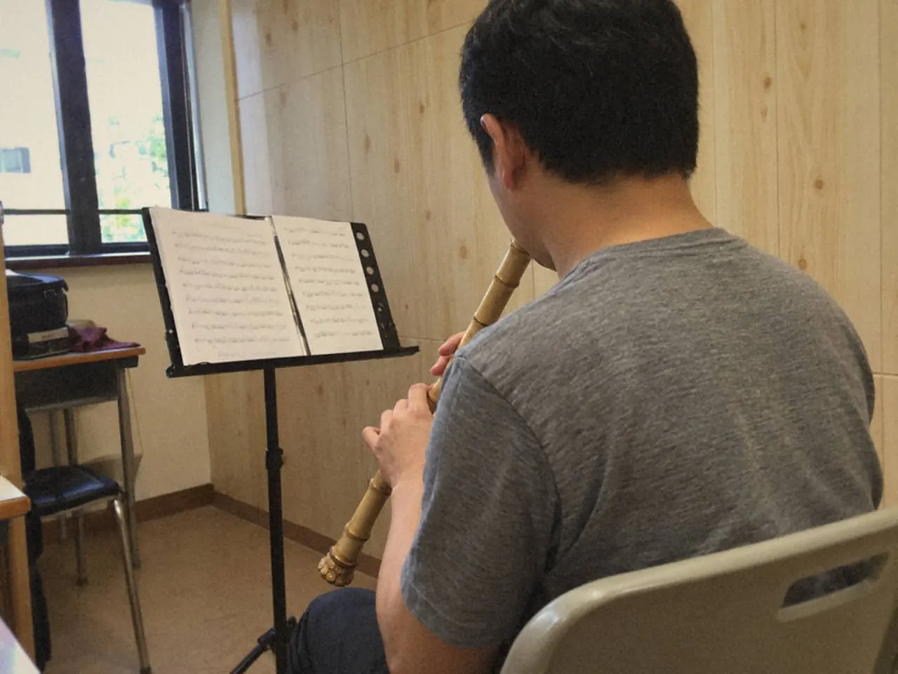
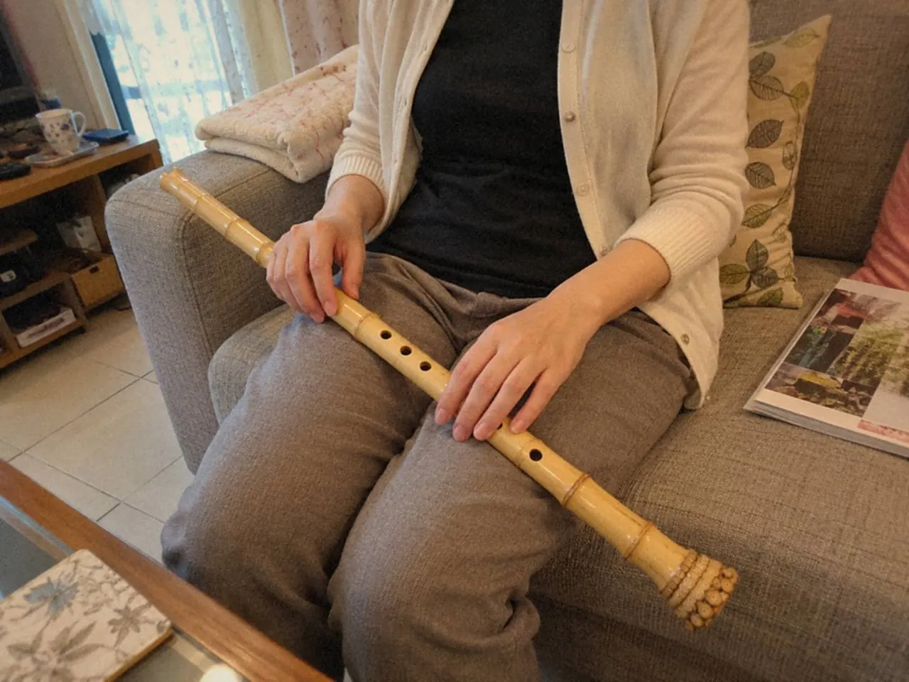
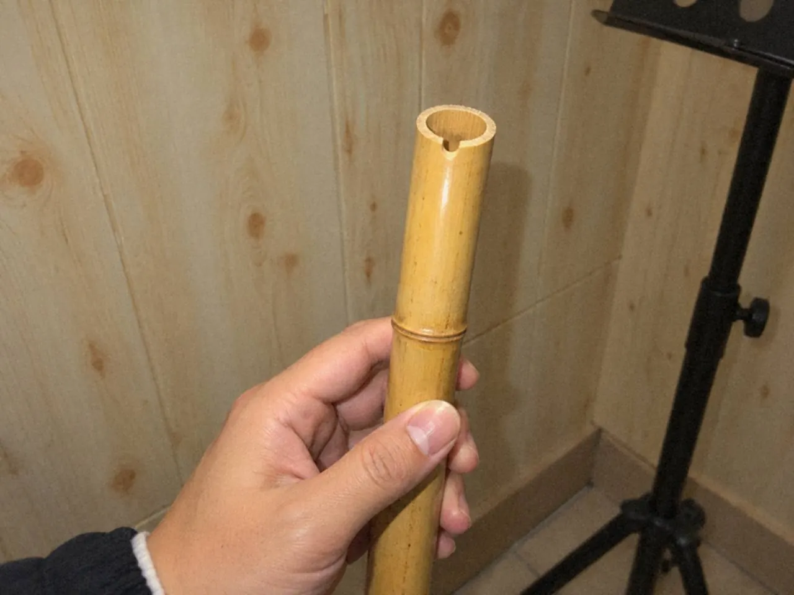

洞簫吹出來只有風聲，多半不是氣不夠。先用小音量、小幅度調整吹口角度，找到聲音開始成形的位置，再練到能夠重複。

初學者常遇到這一刻：吹不響，於是吹大力一點，嘴唇再緊一點，肩膊也升起來。風聲更大了，聲音還是沒有出現。
第一個音為甚麼要慢慢找？
洞簫由管端吹口送氣，要出聲，靠的是氣流對準吹口的方向。吹不響，更多時候是風口方向偏了、身體太緊，這時多吸一口氣也幫不上忙。
人一緊張，嘴唇收緊，肩膊升起，氣也變急，簫聲只會更散。所以先放慢呼吸，慢吸慢吐，用一個音檢查口風和身體。慢、穩、鬆這三個字，要拆成步驟才練得到。
指法不用急着改，整首曲也不用急着通。舒服拿好樂器，頭頸自然，不要低頭追着吹口。老師示範時，可以看嘴唇與吹口怎樣相對，但嘴形不必完全照搬，各人身體條件不同，要找的細微位置也不同。

目標只是一個自然的短音，長度之後再算。
用小音量找。氣是否太急，口風是否太散，句尾有沒有自然收住，小聲吹時都聽得出來；小音量也穩定，才代表口風方向開始找對。進曲之前先聽空音，空音若只有氣聲而沒有核心，之後的長音、音準和古曲線條都會跟着不穩。
在氣聲裏找一條線
一口氣吹到疲倦，很難辨認位置。吹短一點，停一停再試，感覺反而留得住。
小幅度調整吹口角度，每次只改一項，其他條件盡量相近。越着急，越容易同時改了嘴形、力度和姿勢，到頭來不知道聲音從何而來。嘴唇越試越緊的話，放下樂器，重新開始。

某一下出現較清楚的聲音，先不要延長，也不要換指。留意當時的角度，再做幾個短音，看看能否重複。偶然吹響和可以重複，是兩個不同的階段。記下省力時的角度，偶然一下大聲不算數。
可以錄下幾次短音，分辨哪一次氣聲較少、音頭較自然。自己聽不出分別，請老師示範比較，這比只問「對不對」更能建立判斷。
練習時間短些也無妨，舒服而有焦點便足夠。找到之後，不同日子仍要重新校準。洞簫的開始有點像在紙上寫第一筆，太用力反而僵硬。
短音重複得來，才把它延長一點，保留相近的音色。日後的長句、音準和表達，都要回到這個起點。
沉穩的聲音從放鬆開始
放鬆是減少不必要的緊張，不是把所有控制撤走。
越緊張越想多吸氣、吹大力，聲音卻可能變硬、變散，人也更累。氣太急，音色薄；氣太散，又不成聲。先聽第一個音，再看慢氣和放鬆、嘴形和身體有沒有用錯力。
自然吸氣，選一個容易的音，留意口腔的空間，吹到仍能舒服收尾便停，不以氣盡作結束。不要刻意憋氣，也不要鎖緊腹部。
回聽時比較音頭和尾拍是否像同一條線。後半段明顯擠壓，就把長音縮短到可以自然完成，檢查吸氣與姿勢有沒有過度用力，再逐步延伸。
每次只聽一個問題，嘴形和速度不要同一遍改。練習範圍也留在那個長音或那一句慢句。
聲音虛、沙、飄，先查口風方向
聲音有氣聲而沒有核心，先小幅調整氣流對準吹口的方向，固定吹口位置，找最省力的那一點。

相同指法、相近音量吹三次，每次只微調一個角度，錄下來聽。角度動得太多，力度又跟着變，結果便無從比較。
找到較清楚的位置，重複幾次，再試相鄰的音，聽質感能否保持。
如果只有某個音出現氣聲，或某個指法特別不穩，回頭檢查手指和封孔，再請老師協助判斷。口風要緊，但不用獨自承擔每個聲音問題，逐項排查會清楚得多。
換氣要跟着句子走
換氣太晚，句尾變弱；太早，又破壞線條。換氣位應先按句子安排，再配合目前能自然完成的長度，之後才訓練吸氣速度。
不要等到氣不足才臨時停，也不要為了模仿長句而憋氣。可以這樣練：
- 譜上的換氣位先用哼唱試一次，確認停頓不會切斷最重要的方向。
- 抽出換氣前後兩拍單獨練，讓吸氣、手指預備和下一個音接續，音頭要與拍子接得上。
- 總在同一處匆忙，就提早安排一個暫時氣口。
能力改變，換氣安排也可以改。不必一開始就追求最長句，短旋律裏安排一個身體承受得來的換氣位，已經足夠。沉穩的音色不需要身體僵住，呼吸和動作都要留下微調的空間。
常見問題
洞簫吹不響是氣不夠嗎？
多數不是。常見原因是口風方向偏差或身體太緊，先用小音量微調角度。
要練多久才吹得出第一個音？
沒有固定時間。短段嘗試比吹到疲倦更容易辨認位置，看進度就看同一個短音能否重複。
換氣被人聽見，是吹得不好嗎？
不一定。呼吸是樂句的支援，不用藏起來。要看的是它有沒有切斷句子的方向，以及吸氣後的音頭接不接得上拍子。
下次拿起洞簫，只做一件事：找一個能連續重複三次的短音，錄下來。之後想把它拉長，可以讀洞簫長音與慢板；想有人替你聽一聽，可以經洞簫課程查詢。